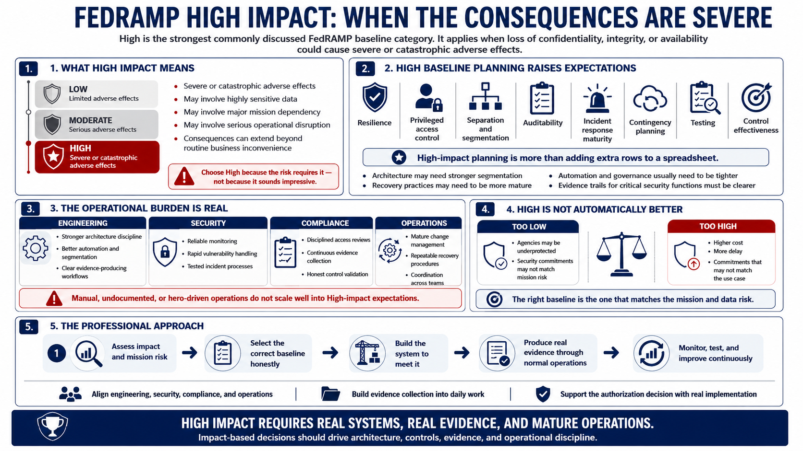

High Baseline Concepts
Connecting to LMS... Progress: in progress

Narration
High impact is the strongest commonly discussed FedRAMP baseline category. It is associated with systems where the loss of confidentiality, integrity, or availability could have severe or catastrophic adverse effects. That might involve highly sensitive data, major mission dependency, serious operational disruption, or consequences that extend beyond routine business inconvenience. High should be chosen because the risk calls for it, not because it sounds impressive.
High baseline planning requires more than adding extra rows to a spreadsheet. It tends to increase expectations for resilience, privileged access control, separation, auditability, incident response maturity, contingency planning, testing, and control effectiveness. The architecture may need stronger segmentation, more mature recovery practices, better automation, tighter operational governance, and clearer evidence trails for how critical security functions are performed.
The operational burden is real. Teams supporting High-impact services need mature change management, reliable monitoring, disciplined access reviews, rapid vulnerability handling, tested incident processes, and strong alignment between engineering, security, compliance, and operations. Evidence collection should be built into normal workflows rather than assembled by memory after the fact. Manual, undocumented, or hero-driven operations do not scale well into higher-impact expectations.
High is not automatically better than Moderate or Low. The right baseline is the one that matches the mission and data risk. Selecting too low a baseline can leave agencies underprotected. Selecting too high a baseline can create cost, delay, and commitments that do not match the use case. The professional approach is to make an impact-based decision and then build the system, evidence, and operations to support that decision honestly.